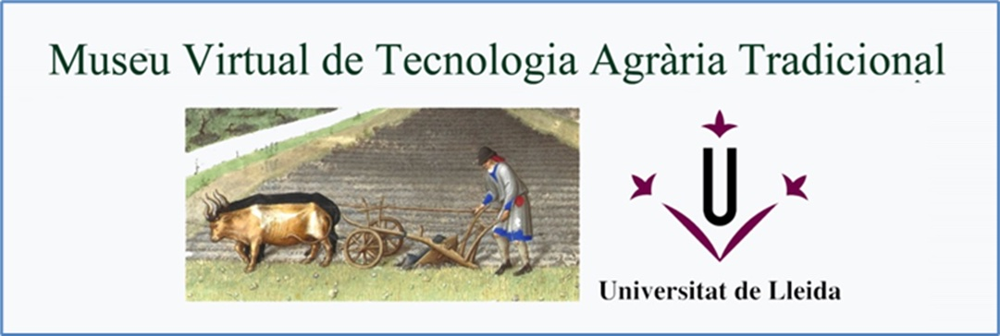

博物馆：从现在回望过去

走进这个空间，就是一次穿越时光的旅程，回到一种以自给自足、充分利用自身资源为特征的生活方式。旧器具、劳动工具、照片、地图和纪念物，把我们带近那个日常生活与土地、劳动以及代代相传的知识紧密相连的年代。
博物馆邀请我们通过奥尔塔 Les Vaqueres 一个家庭的物品和照片，去发现我们历史中的这一段。这是一份见证，让我们了解一个世界的风俗、劳作和生活方式——它从以自产自用为基础的自然经济，逐步走向越来越以生产为导向的经济。
一路上，我们也会遇到属于我们自己、也属于大家的历史记忆：学校、手艺、家务，以及构成莱里达奥尔塔家庭日常生活的点点滴滴。
博物馆展示了，自给自足不仅仅是田间劳作的事，也关乎家务知识、实用技能，以及利用手边的一切：在家做肥皂、扎扫帚、利用周围土地提供的东西；还要会做衣服、补衣服——打补丁、改旧衣，让它们穿得更久。
我们希望打造一个具有重要文化遗产价值和人文价值的项目。通过 Les Vaqueres 一家的物品、照片和回忆，我们找回了一种今天看来遥远、却能帮助我们理解自己从何而来的生活方式。
在这座博物馆里，你看到的不只是一份旧器具清单：我们尝试讲述这些物品背后的人的故事——他们的知识、需求、辛劳，还有他们的幸福时刻。
物品保存着事物的记忆；我们讲述的故事赋予它们生命，帮助我们理解自己是谁、从何而来。
参观沿着三条线索展开：
- 日常生活：家庭如何生活、劳作和安排日子。
- 自给自足：充分利用资源，以及让人们能够以少为生的知识和技能。
- 家庭与共同记忆：帮助我们理解一个时代的人物、回忆和小故事。
自给自足并不意味着一个家庭什么都自己生产，而是尽量少依赖外部资源。
镜中的过去与现在

在入口处，一面大镜子迎接我们，上面的文字邀请我们停下来看一看。
通过记忆和一张棕褐色的老照片，投向昨日并与今日相遇的珍贵一瞥。
镜子远不止是装饰：它是过去与现在对话的隐喻。当我们照镜子时，看到的不只是自己的影像，也会认出自己是一个故事的一部分——这个故事在我们之前就已开始，并以某种方式在我们身上延续。
它邀请我们回望，去理解我们从何而来，珍惜我们所继承的，并发现把我们与前辈们联结在一起的纽带。
从比利牛斯山到莱里达奥尔塔：一个家庭的故事

这部插画漫画讲述了 Les Vaqueres 一家的故事：从他们扎根山区，到来到莱里达平原并在此定居。
画格展示了走过的路、生活方式的变化，以及在另一片土地上开始的新篇章。这是一个家庭的故事，也是一次更大规模迁徙的一部分：许多比利牛斯山区的家庭为寻找新的机会来到平原，并帮助塑造了莱里达奥尔塔、在这里安家落户。
漫画让我们走近那几代人的生活：他们靠努力、辛勤劳动和适应能力，在新的土地上扎下了根。这是一份家族记忆的记录，同时也是莱里达奥尔塔如何被开垦、被改变的历史的一部分。
每个家庭背后都有一条路、一个故乡和一个值得讲述的故事。这些画格帮助我们找回它，并让前辈们的记忆延续下去。
Les Vaqueres：三代人，一个人生故事

这个相框帮助我们理解一种组织生活、劳作、与土地相处和传承知识的方式。
当亲身经历过某种生活方式的人不在了，他们的物品、照片和回忆就成了一个不会再回来、却值得保存的世界的见证。
这个相框之所以特别，是因为它通过三个不同的时刻讲述了一个家庭近一个世纪的历史。它不只是一组照片：它是一段视觉叙事，讲述家庭的延续、代际之间的变化，以及生活方式如何改变。三个瞬间，让我们看到时间流逝、世代更替、一种生活方式的转变。
20世纪30年代：新生活的开始
第一张照片上是一对夫妇和他们的女儿们——从山里来到莱里达平原、在这里开启新篇章的家庭成员。他们是这个故事的第一批人物，这个故事由辛勤劳动、扎根土地和建立新家构成。
20世纪60年代：新一代接过接力棒
第二张照片把我们带到一个变化的年代。新一代已经接过接力棒：安东尼娅结了婚，已是两个孩子的母亲。家庭不断壮大，生活继续向前。
这张照片也留存着一段被内战和流亡烙印的家族记忆。照片上可以看到几位亲戚的汽车，他们曾流亡法国，多年后才得以重新进入西班牙。这个细节讲述着重逢、距离，以及时间和政治都未能割断的亲情纽带。
2010年：萝拉，一种生活方式的活记忆
最后一组照片带我们认识萝拉——Les Vaqueres 的最后一位，于2010年去世。在一个已经深刻变化的社会里，她仍然保存并实践着自给经济的一些知识和习俗。她是博物馆的关键人物：连接自给自足的世界与当今社会的桥梁。
她仍用在拉米哈纳采来的博查草扎扫帚，在家里做肥皂，让那些曾是前几代人日常生活一部分的传统技艺延续下去。
随着萝拉的离去，一个篇章合上了，但一种生活方式的记忆留了下来：利用土地所给予的，依靠双手劳作，以及代代相传的技艺。
这些照片提醒我们，历史不仅存在于重大事件中，也存在于人们的生活、他们的日常举动，以及那些如果不加以保存、就可能随他们一起消失的点滴知识中。
行李箱：流亡、归来与希望的记忆

这些行李箱讲述着一个艰难的故事，但也诉说着人们重建生活的能力。它们象征着被迫的旅程、不确定、离散的家庭，以及找到一个重新开始之地的希望。
这些不是去度假用的行李箱。它们装着生活、分离和幸存的故事。它们代表着家族中一些成员——和许多其他人一样——在艰难岁月里不得不走的路：为逃离战争和镇压流亡法国，以及在被赶出家园后回到山里。
每只行李箱背后都有一段旅程，它并不总是自己选择的，而是被环境所迫。离开意味着抛下房子、土地、回忆，常常还有一部分家人，只希望能找到一个更安全的地方生活。
如今，这些行李箱仍保存着那段历史的一部分。里面有家族文件和纪念物：契据、配给证、照片，以及那个被战争、匮乏和社会变迁烙印的时代的其他记录。
它们成了小小的记忆档案，帮助我们拼合这个家庭的经历，更好地理解那些事件如何影响了人们的日常生活。
因为有时候，行李箱里装的不是我们选择带走的东西，而是我们被迫留下的一切。
学习缝纫：给全家做衣服

在以自给自足为基础的家庭经济中，省钱、把开支压到最低是一种必需。许多今天我们交给专业人士或干脆买新的来解决的活儿，那时都在家里靠家人的资源和本事完成。
缝纫机是这张照片的主角，但它背后是一个关于学习、主动和持家之道的故事。
这是安东尼娅的故事。她是 Vaqueres 姐妹之一，也是两个孩子的母亲，决定学习缝纫。她参加了裁剪缝纫课程（corte y confección），获得了证明她能为全家做衣服的证书。
相框保存着那段学习的记忆：课程证书，以及所有参加课程的年轻女子的合影。旁边就是缝纫机——把布料变成衣服、修改衣服、延长衣服寿命不可或缺的工具。
在家缝纫为家庭预算节省了一大笔钱，也意味着掌握了一项有用而宝贵的技能。这是一种靠巧思、用心和自己的劳动满足日常需要的方式。
于是，缝纫机成了一种生活方式的见证：在那种生活里，凡事会自己动手，是自给自足的重要组成部分。
学校：一个祖国，一种语言，一种宗教

这个角落重现了佛朗哥独裁时期乡村学校的氛围，把我们带回一个教育深受政权意识形态影响的年代。
这里可以看到那些年教室里的一些典型物件：木课桌、书本、学习用品，以及挂在墙上的地图。还有当地圣卡塔利娜学校的招牌——它让人想起曾是奥尔塔许多家庭生活一部分的旧乡村学校。在格雷尼亚纳片区，另有一所设在教堂圣器室里的公立学校作为补充。
佛朗哥时期的教育建立在三大原则之上：一个祖国——西班牙；一种语言——西班牙语；一种宗教——天主教。学校因此成为传播政权所强加的爱国、宗教和社会价值观的工具。
在加泰罗尼亚，加泰罗尼亚语被排除在正式教学和学校生活之外，西班牙语成为学校的强制语言。天主教则在儿童的教育和培养中占据中心地位。
这个空间邀请我们回想那时上学是什么样子、学的是什么、孩子们在怎样的世界里长大。它也让我们思考：学校除了教人读书写字，还能如何映照出它所属的社会和历史时刻。
地图是每间教室必不可少的物件，也提醒我们学校在传授那个时代的知识和世界观方面所起的作用。
户外生活：耕种田地，充分利用土地

户外生活围绕着耕作土地、从土地中获取生活所需的一切而展开。每种作物都有明确的用途，要同时养活家里的人和牲畜。
田里种着苜蓿等饲料作物喂牲口，种小麦磨面做面包，小麦还提供了用途广泛的麦秸。此外还种甜菜喂猪、种芜菁喂牛、种玉米喂鸡。
菜园一年四季都在使用。人们按照季节的节奏为家人种菜。田边种着几棵果树，收获的果子全年都派上用场。
什么都不能浪费。到了收获时节，还得为冬天打算。人们储存食物，做罐头、果酱和其他自制食品，好在没有新鲜果蔬的时候也有得吃。
特别引人注目的是 canyís，一个挂在天花板上的芦苇架。它用芦苇编成，用来存放水果，尤其是苹果，让它们安然度过冬天。挂在高处既节省空间，又能让食物保持在合适的条件下，不会变质，也不会被老鼠够到。
这些工具、器具和传统物件展示了一种劳作随自然节奏而行的生活方式。种植、收获、喂养牲畜、保存食物，都是同一个循环的一部分，这个循环建立在充分利用自身资源、为全年需要做打算的基础上。自给自足不只是生产食物，而是懂得规划和使用资源，以满足一整年的需要。
那是一种几乎所有东西都有用处的经济，日常的知识对于维持家和家人必不可少。
乳品业

这个空间讲述了家庭经济中另一项关键活动：生产和出售牛奶。它展示了一些家庭在莱里达奥尔塔定居后，如何在田间劳作之外增加畜牧业，把牛奶变成收入来源。照片也保留了这项工作所用的器具，帮助我们想象那门小小的家庭生意是如何运转的。
比利牛斯山区的家庭在莱里达奥尔塔定居后，许多人在日常劳作中增加了养牛。生产牛奶成了补贴家用、靠自己的劳动赚钱的一种方式。
在 Les Vaqueres，牛奶有两条去路：一部分直接卖给附近的邻居，他们到农舍来买日常所需；剩下的则运到莱里达去卖。
因此，乳品业是一项把家中生活与周边环境联系起来的活动。一方面，它为邻近的家庭供应新鲜牛奶；另一方面，它让这家人能把自己的产品带到城里。
展出的乳品器具——搅乳桶、量具和奶桶——让人想起牛奶是如何收集、储存和分送的。这是一项需要每天持续劳作的活动，受挤奶时间约束，还要把新鲜牛奶送到顾客手中，这些器具对它不可或缺。我们甚至能看到挤奶凳。
这项工作展示了家庭如何把种植和养殖结合起来，充分利用自己所拥有的。土地养活牲畜，牲畜产出牛奶，卖牛奶的收入又帮助维持家计。
乳品业是自给自足与谋生常常相辅相成的一个例子：既为家庭自身的需要而生产，也出售剩余，以获得支付其他家庭开支所需的钱。
自给自足：利用土地给予的一切

博物馆的这一部分体现了赋予它意义的自给自足理念。照片展示了一大批简单却非常专门的工具，让人们能够利用自然环境所提供的一切。
在那个年代，大自然就像一个家人伸手可及的食品储藏室，人们必须懂得利用它所提供的一切。每项活动都有自己的工具，每件物品都满足日常生活中的某种具体需要。
这些工具讲述着那种生活方式，以及在田野、菜园、树上、河里和田埂等不同地方寻找食物的本领。
例如，这里有用来养蜗牛的 caragolera；在河里捕鱼用的网 filat；收鸡蛋的小篮子；以及用来捕捉小鸟的陷阱 ratera。
箱子里还有各种劳动工具：采橄榄用的 serpeta、播种玉米用的点播棒、镰刀，以及其他在田里各有专门用途的工具。
采集来的食物大部分由家人吃掉。当收成或采集超过所需时，多余的可以拿到市场上卖。这样，来自土地的东西不仅帮助养家，还能带来一点收入。
我们意识到，想象力、观察力和对周围环境的了解，与工具本身同样重要。物尽其用是一种必需，也是一种理解生活的方式。
El mandongo：猪，一整年的食品储藏室

在自给自足的家庭经济中，猪扮演着至关重要的角色。它与提供蛋和肉的家禽一起，是饮食中蛋白质的主要来源之一。
猪一年到头吃家里和菜园的剩余食物，直到宰杀的时候到来——传统上在最冷的月份，常常是一月。低温让处理和保存猪肉更容易。
Mandongo 远不止是杀猪：它是一整套需要组织、经验和代代相传知识的活计。猪身上的每个部分都必须利用起来，变成能保存好几个月的食物。
为此，人们使用不同的保存方法：把一些肉风干；灌香肠并挂起来晾制；一部分煮熟；还要做 tupina，一种把肉浸在油脂里保存的方法。
这个空间里的器具让我们走近那份艰苦而共同完成的劳动，它把杀猪变成了一场节日，意味着一年中大半时间的食物储备。
总之，猪是一个名副其实的家庭食品储藏室。依靠规划、辛勤劳动和保存知识，一次宰杀就能提供好几个月的各种肉制品，直到第二年再次循环。Mandongo 是这种未雨绸缪文化的完美例子：关键不只是获得食物，而是懂得如何加工和保存，让它能长久留存。
什么都不能浪费：猪的每个部分都有用处，每样产品都帮助确保一家人有足够的食物。
闲暇时光：纸牌、收音机和聊天

日常生活并不只有劳作和义务。也有休息、找点乐子、全家人在一起的时刻。
在一些傍晚，一天的活儿干完以后，或是星期天住在莱里达的姐妹卡梅塔来探望、大家聚在一起的时候，这个角落就成了一个小小的聚会场所。那是大家都盼望的时刻。
打牌是最常见的消遣之一。一局牌是打发时间、聊天、一起开怀大笑的机会。与此同时，总是开着的收音机用音乐、新闻和日常生活中的节目陪伴着他们，比如广播连续剧或节目Señora Francis。
也有时间讲故事、分享回忆、看照片、聊聊近况。要过得开心并不需要很多：一副纸牌、一台收音机和家人的陪伴就足够了。
这个角落让我们想起自给自足的另一面：一种简朴的生活，闲暇围绕着家和亲情展开。在博物馆中，它展示了家庭生活最有人情味的一面：家人们也懂得享受生活。
因为在劳作和日常需要之外，正是这些小小的共处时刻构成了一个家庭的回忆。
这个角落讲述的是一种不以金钱衡量、而以共度时光衡量的财富。
秤：迈向新的农业经济

最后这个空间尤为重要，因为它以一个关键理念为博物馆参观画上句号：家庭经济的转变——一步步从自给自足、维持生计，走向为生产和销售而耕作。
渐渐地，过去的谷物种植让位于果树，主要是梨树和苹果树。农场的产出不再只供自家所用：在市场上销售变得越来越重要。
三件物品帮助我们理解这一变化。
照片：新作物，新劳作
在其中一张照片上，我们看到安东尼娅和她的丈夫若泽普正在配制石硫合剂（多硫化钙），用来处理果树、防治病虫害。这是一幅适应新型农业的图景，这种农业需要新的知识、技术和照料。
秤：称重，为了出售
当果树种植成为重心，秤就成了不可或缺的工具。农场采摘的每一箱梨和苹果都要在秤上称重，这是准备和出售收成的必要步骤。
尺寸分级器：供应市场的水果
另一件物品是尺寸分级器，用来检查梨的大小，并按照销售要求的尺寸分级。水果不再只为家庭餐桌而受重视：它还必须符合质量标准和商品分级。
这三件物品讲述了向更专业化、以市场为导向的农业的转变。土地仍是主要的生计来源，但需求和劳作方式都已改变。
于是，秤标志着一个循环的结束和一个新循环的开始：从主要为生活而生产的经济，走向也必须为销售而生产的经济。
传统农业技术虚拟博物馆

传统农业技术虚拟博物馆（MVTAT）设立于莱里达大学历史系的历史、文献与遗产服务部门。
该博物馆旨在展示一系列工具和技术，它们塑造了乡村生活的历史，直到化石燃料在农业及农产品销售中普遍使用为止。它还展示了最早的拖拉机和机器，以便与传统农业的工具相比较——在传统农业中，役畜和人力是主要的动力来源，另有少数靠风力或水力驱动的技术。
我们以自己的博物馆“Eines de les Vaqueres”参与其中。在这里，农业的转变和逐步走向市场经济的过程，通过莱里达奥尔塔一个家庭的故事展现出来，讲述了那整个时代的生活方式。